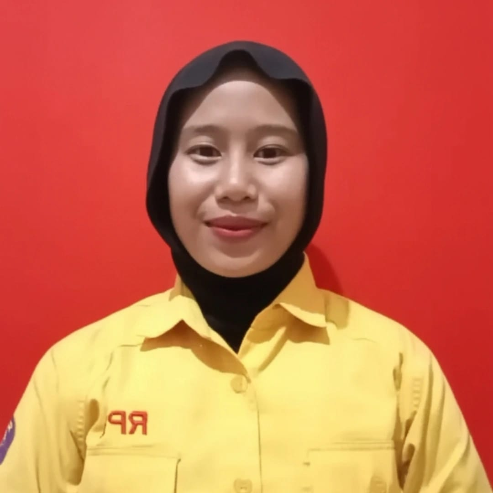

Hasna Istiqomah • Pelajar SMKN 1 Kawali
Seorang individu yang memiliki ketertarikan dalam bidang IT. Aktif di kegiatan akademik & ekstrakurikuler, termotivasi untuk terus belajar.
Tentang Saya
Seorang individu yang memiliki ketertarikan dalam bidang IT. Saya aktif mengikuti kegiatan akademik maupun ekstrakurikuler seperti ekstrakurikuler Informasi dan Teknologi. Pengalaman ini membantu saya mengembangkan keterampilan komunikasi, kerja sama tim, serta kedisiplinan dalam bekerja. Saya memiliki motivasi tinggi untuk terus belajar dan berkembang, serta siap beradaptasi dengan hal-hal baru.
Resume & Pengalaman
Resume ini mencerminkan perjalanan saya dalam bidang akademik dan organisasi. Dengan berbagai pengalaman yang telah saya jalani, saya terus berupaya mengembangkan keterampilan serta kemampuan dalam aspek akademis maupun pengembangan diri.
- Extra IT — SMKN 1 Kawali (2023 - Sekarang) — Mengembangkan kemampuan dalam Teknologi Informasi.
- Tes Viera (2025)
- Extra Vokal (2022 - 2023) — Meningkatkan keterampilan vokal dan teknik bernyanyi melalui latihan rutin.
- OSIS — SMPN 1 Panjalu (2020 - 2022) — Memimpin dan bekerja sama dalam tim untuk meningkatkan kedisiplinan serta kreativitas siswa.
- Bendahara kelas (2022 - sekarang)
Pendidikan
- SMKN 1 Kawali (2023 - 2026)
- SMPN 1 Panjalu (2020 - 2023)
- SD Negeri 1 Mandalare (2014 - 2018)
- SD Negeri 2 Mandalare (2018 - 2020)
Kontak
- Email: hasnaistiqomah23@gmail.com
- Instagram: @hnptry_
- Telepon: +62 853-2076-0097